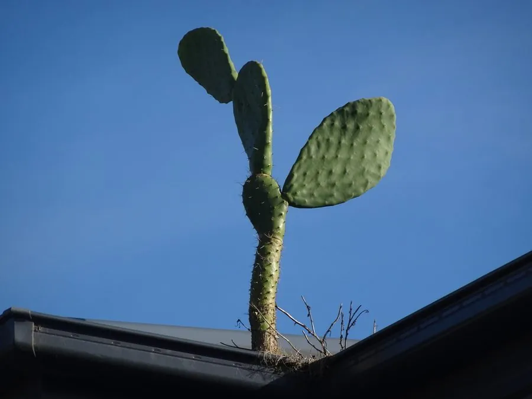

多肉植物 · 植物界
梨果仙人掌 Opuntia ficus-indica

仙人掌科大型肉质植物，扁平茎节上结出可食的仙人掌果，原产墨西哥，在多国被广泛栽培利用，果实和茎节均可加工。
- 分类
- 门被子植物门纲木兰纲目石竹目科仙人掌科属仙人掌属
- 栖息环境
- 墨西哥的干旱高原与石质山坡，耐旱、喜光、耐高温
- 地理分布
- 原产墨西哥，现地中海沿岸、南非、澳大利亚及中国南方均有栽培或逸生
- 保护级别
- 暂无评估；在部分地区逸生为入侵植物
物种志
梨果仙人掌为仙人掌科仙人掌属的大型肉质灌木或小乔木，高 2–5 米，茎由扁平的椭圆形节片连接而成，节片长 20–40 厘米，表面灰绿色，散生瘤突。刺通常退化或稀疏，但幼节片上仍有细刺。叶片小，很早脱落，光合作用主要由茎节承担；花黄色或橙黄色，直径 6–8 厘米，花期 5–6 月；果实梨形，成熟时黄、橙或红色，长约 8 厘米。
梨果仙人掌原产墨西哥，喜阳光充足、炎热干燥的环境，耐旱力极强，在贫瘠的石质土中也能生长，靠茎节扦插即可繁殖。果实清甜多汁，可鲜食或制果酱、饮料；节片可作牲畜饲料，适合干旱地区种植。它是胭脂虫的重要寄主，雌虫在茎节上取食，可提取天然红色染料胭脂红。不过它在澳大利亚、南非等地逸生后大量繁殖，成为入侵植物。
形态与习性
- 株高2–5 米，由扁平茎节连接而成
- 花期5–6 月，花黄色或橙黄色
- 果期7–9 月，果实梨形，成熟时橙红
- 光照极喜光，需充足日照
- 水分极耐旱，忌频繁浇水
- 土壤排水良好的砾质土或沙土，耐瘠薄
- 繁殖以茎节扦插为主
- 主要用途果实食用、饲料、胭脂虫寄主
趣味知识
- 梨果仙人掌的“叶片”其实是扁平化的茎节，真正的叶只在小节片上短暂出现。
- 胭脂虫寄生于它的茎节，可提取天然红色染料胭脂红，曾用于口红和食品色素。
- 它的果实清甜多汁，墨西哥等地把它当作水果食用。
- 在澳大利亚等地逸生后大量蔓延，被视为入侵植物。